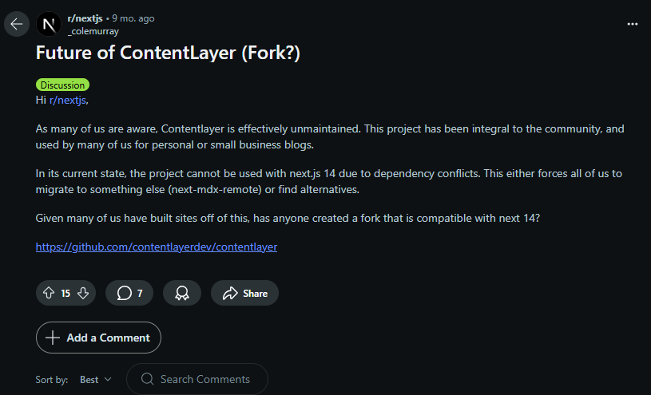
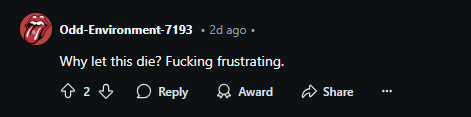

Oskari-juttuja
Sami Mäkinen - Maanmittauslaitos
Lyhyt historia
- Syntynyt Paikkatietoikkunasta
- Avointa lähdekoodia
- ???
- Dollarit taskuun
Avointa lähdekoodia
GitHub.com/oskariorg
- oskari-server
- sample-server-extension
- oskari-frontend
- oskari-frontend-contrib
- sample-application
Avointa lähdekoodia
GitHub.com/oskariorg
- sample-application
- oskari-frontend
- oskari-frontend-contrib
- sample-server-extension
- oskari-server
### Uudet dokkarit!
- Next.js
- TypeScript \o/
- Contentlayer
- Data <> komponentti mäppäys/tyypitys \o/
- Markdown
### Next JS version päivitys
"Nyt ei ehdi, kun on vähän isompi muutos"
Contentlayer katastrofi

Contentlayer

StackBit -> Netlify
### Uudet dokkarit!
- Uusi logo!
- Uudet värit!
- Uusi rakenne!
- Saavutettavuus
### Uusi sivu -> saavutettavuus
- DOM-rakenne
- h1 ja h3 ilman h2 jne...
- Värikontrastit
- Kuvien alt-tekstit, aria-labelit
- Näppäimistönavigointi
- Piilotettava menu
- Ruudunlukijat, linkkejä liikaa, alt-tekstejä liikaa...
- desktop, mobiili
### Tietoturva
- DB-dokkarit
- Generoidaan OS-softalla
- Generoitu sivu käyttää haavoittuvia kirjastoja
- Jätettiin pois
### Uudet dokkarit!
- Sisältö?
- Kermavaahto \o/
- Documentation intro \o/
- Workshopien sivut unohtuivat :(
GitHub.com/oskariorg
- oskari-documentation-site
- oskari-documentation
- linkitys
### Issuet?
- Aiemmin:
- oskari-docs
- Nyt:
- oskari-documentation?
### Oskari-puolella
> "Pitäisi aina dokumentoida."
Varsinkin, jos keksii _nerokkaan_ tavan tehdä asioita, mutta harvoin kukaan niin tekee.
- AntD migraatio
- tyylit rikki -> korjattiin itse eikä dokumentoitu :P
### Tulossa
- Käyttäjän aineistojen yhdistäminen
- Java 8 -> 17
- Työpaja devaajille alkuvuodesta 2025
- Oskarin verkostopäivä toukokuu 2025
- Tilaajan ohje ja blogiartikkeleita Oskarista eri näkökulmista oskari.orgiin
# Kiitos!
- https://oskari.org
- https://github.com/oskariorg
- Oskari-user@lists.osgeo.org
- https://gitter.im/oskariorg/chat